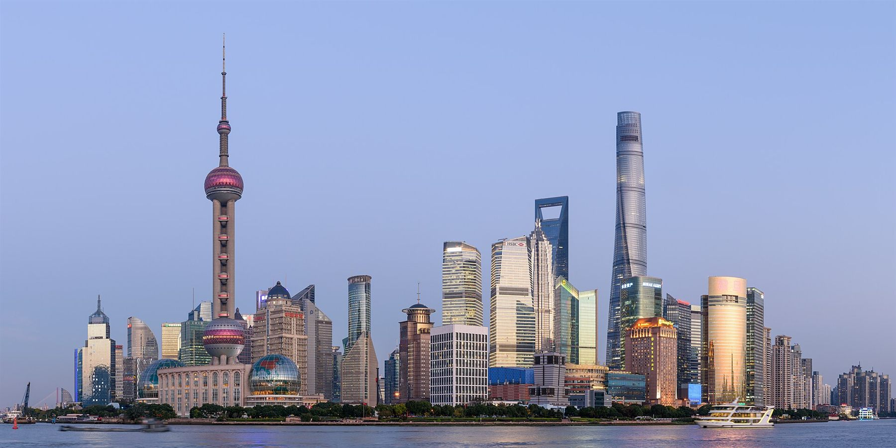

China Markt Entree Strategie
Onderzoek naar de marktpotentie van producten en diensten in China, met inzicht in industrieën, potentiële afnemers, concurrenten en Chinese wetgeving.
- Marktpotentie en concurrentieanalyse
- Markt Entree Strategie
- Activiteiten- en risicoplanning